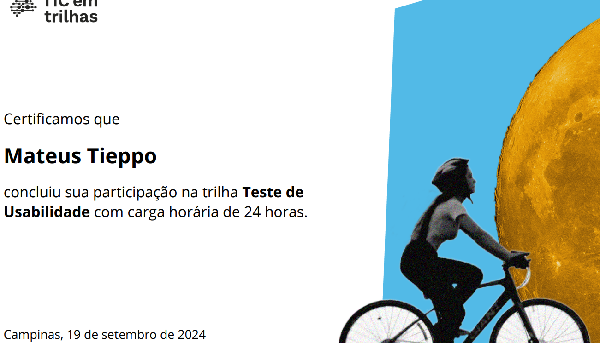
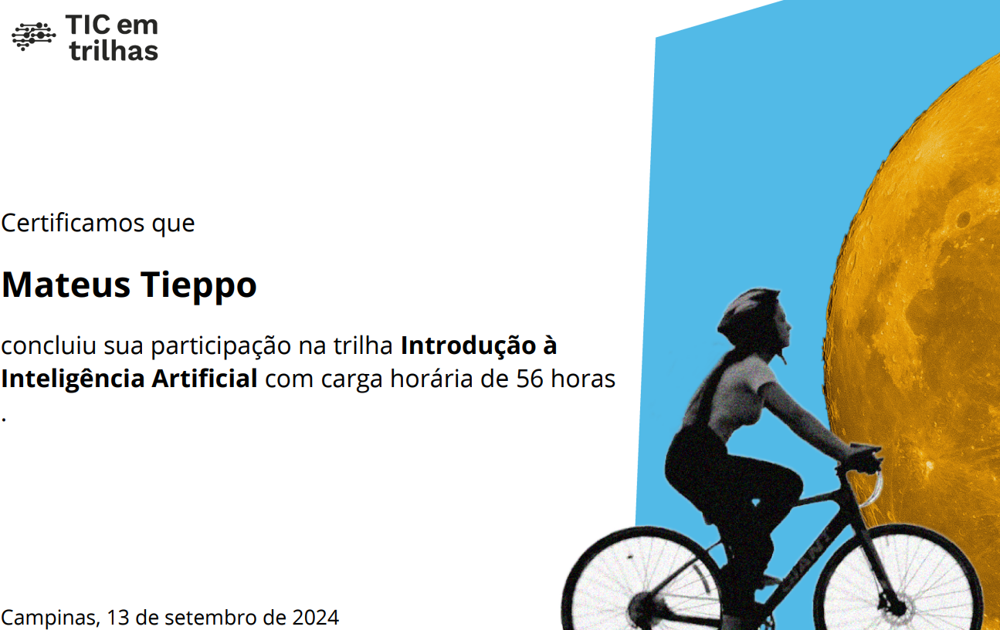

Skills
Java
JavaScript
HTML & CSS
Python
Git & GitHub
SQL
C
Artificial Intelligence
Projects
Pokédex
The Pokédex project is a web application created using HTML, CSS, and JavaScript. It allows users to easily search for and view different Pokémon, displaying essential information like types and abilities.
Skills Improved:
HTML: Enhanced my ability to structure web content.
CSS: Learned to create responsive designs and improve visual aesthetics.
JavaScript: Gained experience in implementing interactive features and managing data.
This project not only reinforced my coding skills but also taught me the importance of user experience in web development. Additionally, we utilized an API to fetch Pokémon data, enhancing our understanding of working with external data sources.
ProjectStarbucks Landing Page
The Starbucks landing page project is a visually appealing web application designed using HTML, CSS, and JavaScript. It showcases a variety of Starbucks products, allowing users to explore menu items, promotions, and store locations easily.
Skills Improved:
HTML: Enhanced my ability to create structured and semantic web content.
CSS: Developed skills in responsive design and visual presentation, making the page aesthetically pleasing.
JavaScript: Gained experience in adding interactive elements and managing user interactions.
This project not only strengthened my coding skills but also highlighted the importance of user experience and brand representation in web design.
ProjectCalculator Project
The Calculator project is a functional web application built using HTML, CSS, and JavaScript. It allows users to perform basic arithmetic operations such as addition, subtraction, multiplication, and division in an intuitive interface.
Skills Improved:
HTML: Enhanced my ability to create structured layouts for web applications.
CSS: Developed skills in styling and responsive design, ensuring the calculator looks great on all devices.
JavaScript: Gained experience in implementing logic for mathematical operations and handling user input.
This project not only reinforced my coding skills but also emphasized the importance of user-friendly interfaces in software development. Additionally, we implemented features that improved functionality and enhanced the overall user experience.
ProjectACME AirDrones Project
The ACME AirDrones project is a Java-based application designed to manage drone logistics and transportation operations. It processes and organizes data using CSV files to handle fleet management, pending deliveries, and report generation efficiently.
Skills Improved:
Java: Strengthened my object-oriented programming skills by implementing classes, inheritance, and polymorphism.
File Handling: Gained experience in reading and writing CSV files to store and retrieve structured data.
Software Design: Applied principles of modular programming to ensure maintainability and scalability.
This project not only enhanced my technical expertise but also reinforced the importance of structured data management in real-world applications. Additionally, I focused on improving system efficiency and user experience to create a practical and functional solution.
ProjectCertifications
-
Introduction to Machine Learning
Completed the "Introduction to Machine Learning" track (48 hours), focusing on data analysis, algorithm implementation, and model evaluation, covering supervised/unsupervised learning and performance metrics.
Download -
Fundamentals of Software Testing
This certification covers testing methodologies, test case design, and defect management over 24 hours, providing a foundation for software quality assurance.
Download -

Usability Testing
Completed 24 hours in "Usability Testing," focusing on user experience assessment and test design to enhance product usability.
Download -
Applied Psychology in UX
This 24-hour course explores psychological principles influencing user behavior, equipping participants with tools to enhance user-centered design.
Download -

Introduction to Artificial Intelligence
Completed 56 hours in "Introduction to Artificial Intelligence," covering AI concepts like machine learning and natural language processing.
Download -
UX Writing
This 24-hour course focuses on crafting user-centered content and best practices for effective microcopy and user interfaces.
Download -
Prototyping for Those in a Hurry
This certification covers rapid prototyping techniques over 12 hours, emphasizing quick iteration and user feedback.
Download -
Character Creation for Games
This course explores character design fundamentals, focusing on storytelling and visual aesthetics for engaging game characters.
Download -
Code Versioning
Participants learned version control systems over this course, covering Git and GitHub for effective project management.
Download -
Fundamentals of Object-Oriented Programming
This course covers OOP concepts like encapsulation and inheritance, providing a foundation for scalable software development.
Download -
Design for Non-Designers
This course equips non-designers with design principles, focusing on layout, color theory, and effective communication.
Download -
Fundamentals of Programming
This course introduces core programming concepts, emphasizing practical coding skills and problem-solving techniques.
Download -
Front-End Development
This course covers essential front-end technologies, including HTML, CSS, JavaScript, and modern frameworks, totaling 115 hours of learning.
Download -
HTML & CSS
This course covers the fundamentals of web development, including semantic HTML, responsive design, and modern CSS techniques, totaling 65 hours of learning.
Download -
Practice HTML & CSS in Web Projects
This course focuses on applying HTML and CSS concepts through real-world projects, enhancing practical skills in web development, totaling 35 hours of learning.
Download -
Getting to Know SQL
This course introduces the fundamentals of SQL, covering database creation, queries, and data manipulation, totaling 41 hours of learning.
Download -
Data Modeling
This course covers the fundamentals of data modeling, including entity-relationship diagrams, normalization, and database structuring, totaling 36 hours of learning.
Download